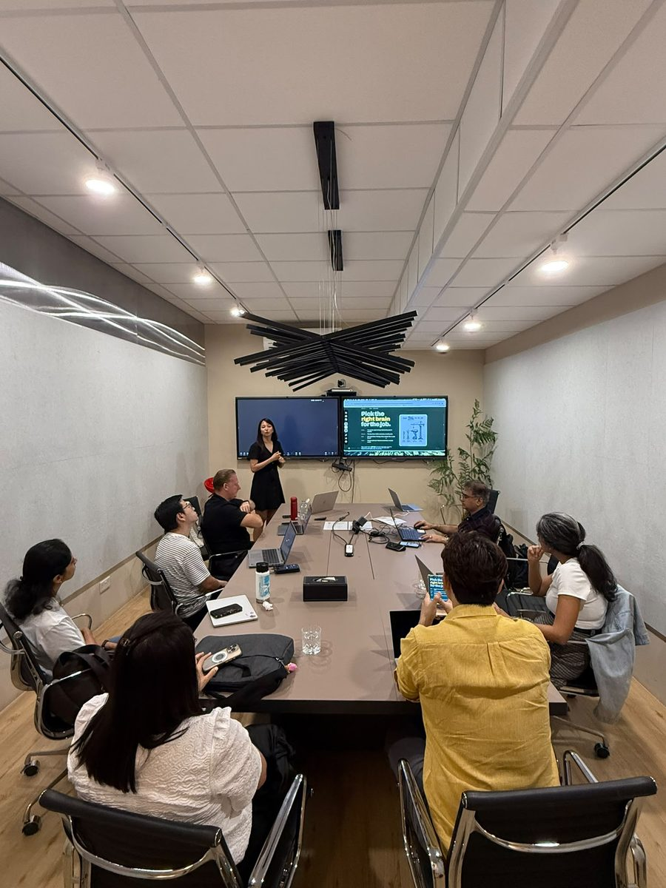

Doors and login triage
Auth is the number one time thief in a hands-on room. Doors open 15 min early and helpers sweep for red screens, so nobody hits the first build block logged out.
2 evening cohorts with Cogentic AI Partners, 20 and 21 Aug 2026, 6pm to 9pm at SQ Collective in Singapore. 3 hrs a night, hands-on from the first block. The room built Claude Projects on their own work, first custom skills, and handed real tasks over.
Published 9 September 2026
Professionals over the 2 nights, almost all of them non-technical.
The cohort was capped at 30, which is deliberate. Above that I can't walk the floor during a build block, and the build block is where the workshop is actually won. Everyone brought a laptop. People only remember the thing they did themselves.
Cogentic's brief was one line. Run a Claude session for the community, pitched at people who are new to AI.
So the starting point wasn't "here is what Claude can do". What almost nobody had was a Project, a skill, or anything that kept running once they closed the tab. You pay for the whole brain and live in the chat box.
Pre-work said it plainly. Bring a laptop, and bring one real piece of work. A report you write every month, a deck you're building, a process doc. In transition, bring your resume and one job ad you're eyeing instead.
Hard start 6pm, hard stop 9pm, identical both nights. Straight off the facilitator runbook.
Auth is the number one time thief in a hands-on room. Doors open 15 min early and helpers sweep for red screens, so nobody hits the first build block logged out.
What AI is, how it learned, and a 60 second history whose only point is that the useful part is 4 years young, so nobody in the room is behind. Then the car wash test, which the room fails cheerfully and never forgets.
Picking a model, the 4 part brief, and the same question asked twice live. Cold answer first, then briefed with role, situation and constraints. Silence while they read the difference is fine.
A 2 min inbox triage demo on a pre-connected Gmail, then the safety slide gets its full minute because it's the question every room asks. It reads and it drafts, and it does not send. I press send.
The biggest block, and the one I never cut. I build a Project live, then the room builds theirs on the work they brought. Helpers walk, I walk.
10 min. Demo screens reset for the second half.
The anatomy of a SKILL.md file, no code anywhere in it, then a live fork that changes the behaviour with one new line. Then they write one and fire-test it with 3 phrasings.
Chat answers, Cowork finishes. They delegate one real task the way you'd hand it to a new hire: files plus the outcome, not a list of steps.
2 or 3 volunteers, a minute each, picked because I saw them building something interesting. Then the 30 day path and out on time.
3 hands-on blocks, 3 things that exist after you go home.
| Block | What they made |
|---|---|
| Projects, 30 min | A Claude Project wrapped around the work they walked in with. Instructions, knowledge, tools. Written once, loaded into every chat after. |
| Skills, 15 min | Their first custom skill. A plain text file that teaches Claude one job so they never brief it again. Most of the room asked Claude to draft the file, which is the fastest route for beginners. |
| Cowork, 15 min | One real task delegated end to end, then reviewed like it came from a new hire. That review habit is the part that makes it safe. |
The demos ran on a job hunt scenario, because it's a piece of work the whole room understands even when their industries don't overlap. Build the Project, reverse engineer a job ad, tailor a resume. What the room remembers is the refusal. Claude won't invent automation experience the candidate doesn't have, and you can watch people decide to trust it right there.
Read those as attendee feedback, not a study. The confidence figures come from an anonymous survey before and after, answered by different people each time, so it isn't a paired measurement.
The vocabulary arrived one term at a time and never as a single picture, and 2 people asked for a diagram showing how Chat, Projects, Skills, Artifacts, Connectors and Cowork relate to each other. It was the only thing asked for twice, so it goes into the next cohort before anything else does.
"Geargina has very good 'trainer' skills. She knows the stuff well and is able to articulate the approach very clearly with simple illustrations and drawing comparisons to things we easily understand."
"Yesterday's session was terrific! Geargina was very knowledgeable, and my mind was focused on how the learning could be used in everyday life, not just work."


Related: the BNF Group retreat workshop, the AI workshops hub, and the Claude workshop page.